Guías y notas técnicas
Aquí vamos subiendo lo que nos toca ver en el taller. Materiales, mantenimiento y ajustes, con los números que usamos en el día a día. La idea es que resuelvas tú lo que se pueda resolver en casa y que sepas en qué punto ya no conviene seguirle.
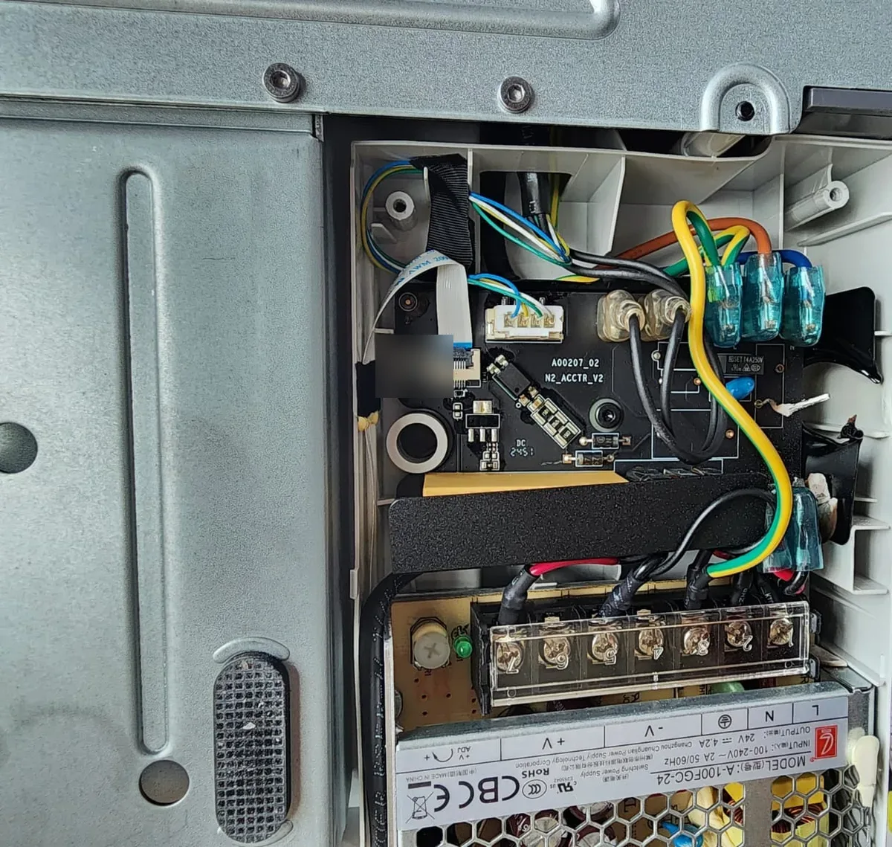
Bambu Lab A1 prende pero no da imagen: la placa de CA quemada
Una A1 sin pantalla ni sonido: adentro de la base había un capacitor reventado en la placa de CA. Qué cambiamos y qué puedes revisar tú sin abrirla.

Tu A1 raspa la cama en la primera capa: lo que encontramos en el taller
Dos A1 que raspaban la placa o imprimían en el aire, y en ninguna el problema era la cama. Tornillos flojos, un calcetín gastado y un hotend que ya no se sostenía.

El AMS gira pero no jala el filamento: un engrane gastado en una X1 Carbon
Los rodillos giraban pero el filamento nunca llegaba al extrusor. Un engrane gastado se comió su cubierta y le quitó al AMS el último empujón.

Antes de llevar tu impresora al taller: tres casos que no eran falla
Un archivo de un solo color, un cable del ventilador desconectado y una nivelación pendiente. Tres impresoras que llegaron al taller sin nada roto, y lo que puedes revisar tú antes de pagar una reparación.
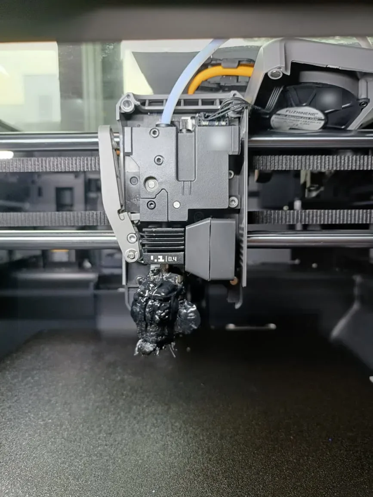
Bola de filamento en el hotend: cómo se forma y qué hacer
Una A1 mini con el cabezal cubierto de plástico y una P2S con la boquilla tapada por una pieza que se despegó. Cómo se forma la bola, cómo quitarla sin romper cables y cómo evitarla.
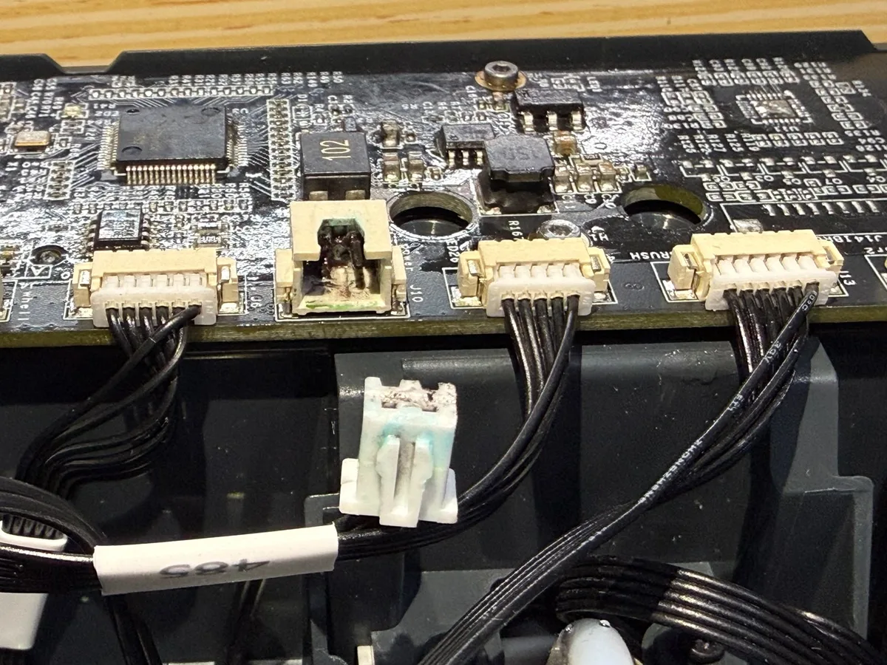
Humedad en el AMS: así se ve una placa corroída por dentro
Dos AMS que llegaron sin leer filamentos o sin encender, y adentro había humedad, terminales corroídas y baleros con óxido. Qué se pudo salvar y cómo evitar que le pase al tuyo.
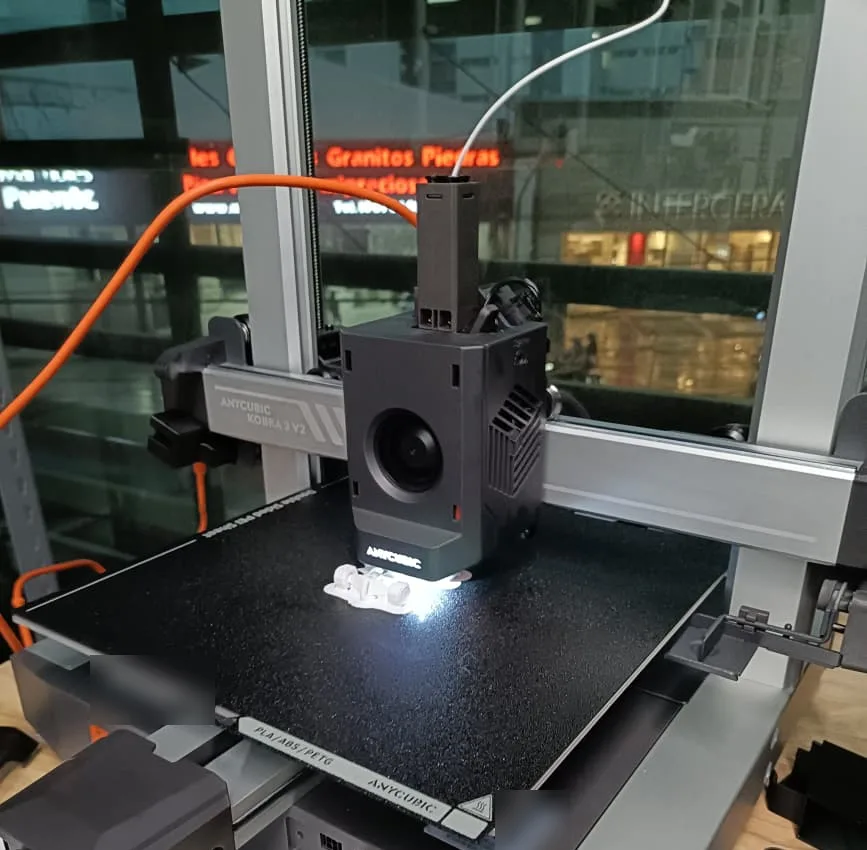
Anycubic Kobra 3 con el eje X que rechina y arrastra: baleros y lubricación
La Kobra 3 V2 empezó a arrastrar y a rechinar en el eje X. Bandas bien; un balero con juego y falta de grasa, resuelto con ajuste y una prueba de cinco horas y media.

Mi P1S no reconoce el AMS: cuando la falla está en la impresora
Una P1S dejó de ver su AMS y todo apuntaba al AMS. Medimos cable, voltaje y señales y cambiamos una pieza a la vez hasta dar con la culpable: la placa MC de la impresora.
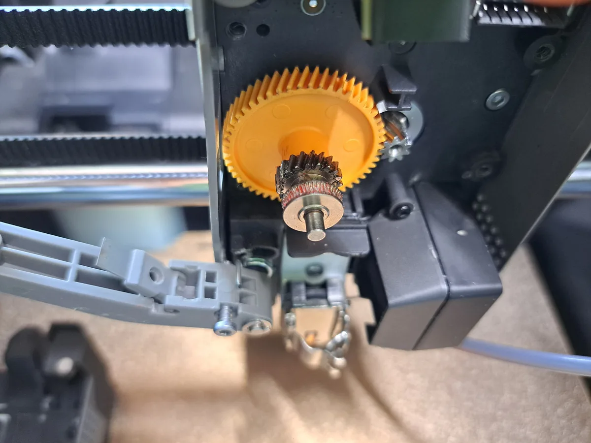
Tu Bambu Lab P2S no extruye: lo que encontramos dentro del cabezal
La P2S marca extrusor atascado pero la boquilla está limpia. Abrimos varios cabezales en el taller y te enseñamos qué encontramos adentro, con fotos: clips sueltos, filamento atorado en el cortador y un resorte sin su tapa.

Bambu Lab X2D no detecta la boquilla derecha: el cable del sensor Eddy roto
Una X2D que no reconocía la boquilla derecha ni después de seguir la wiki: el cable del sensor Eddy estaba trozado. Por qué la soldadura es temporal y cuándo cambiar el sensor.
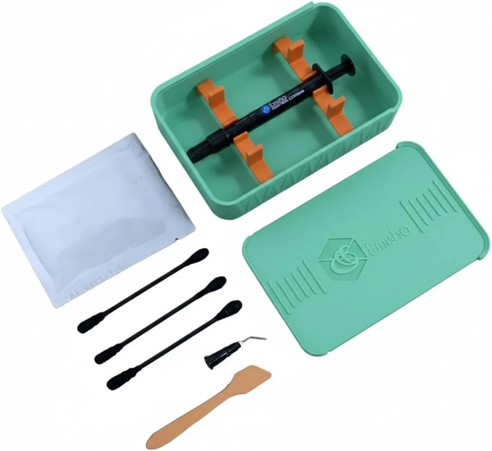
Pasta térmica o metal líquido: cuál le toca a tu equipo
Conduce alrededor de 38 W/m·K contra los 3 a 12 de una pasta buena, pero no va sobre aluminio. La pregunta que decide, la tabla punto por punto y cuánto material se ocupa de verdad.
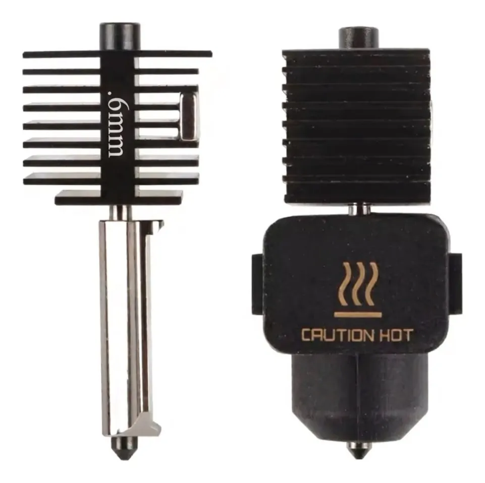
Mantenimiento de tu Bambu Lab: el calendario que seguimos en el taller
Media hora al mes y casi todo se hace con alcohol y un cepillo. Qué toca en cada plazo, qué lubricante sí va en los ejes y las cinco cosas que nunca hay que hacerle.
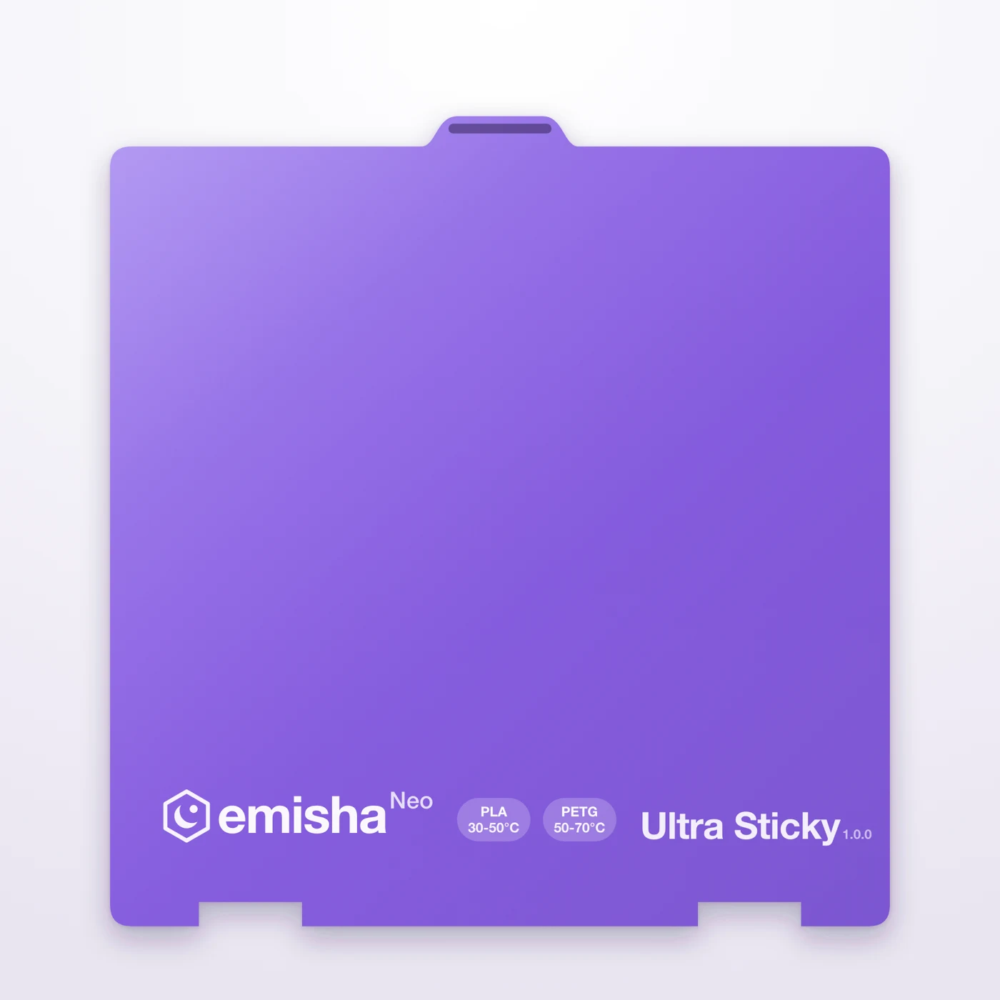
Qué placa de impresión usar: lisa, texturizada o Ultra Sticky
Es la pieza que menos se piensa y la que más decide. Qué acabado da cada superficie, por qué más caliente no pega mejor y qué medida le toca a tu máquina.
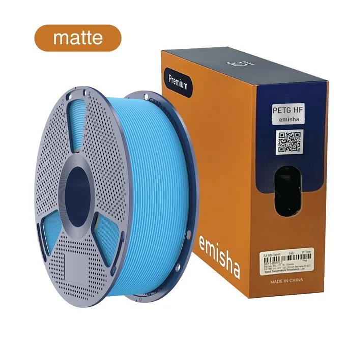
Stringing: los hilos entre las piezas y cómo quitarlos
Subirle a la retracción es casi siempre la reacción equivocada. Las cinco revisiones en el orden que sí funciona, la torre de temperatura y cómo limpiar la pieza que ya salió.
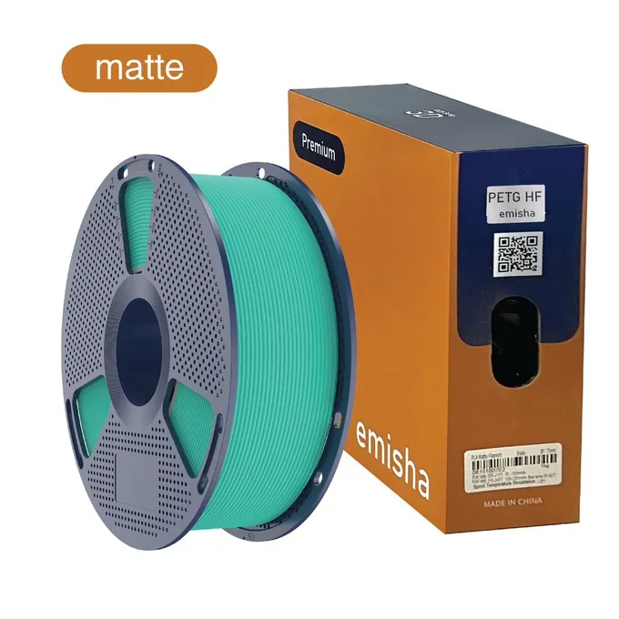
AMS y multicolor: cuánto material se va en la purga y cómo bajarlo
La torre de purga puede pesar más que la pieza, y el desperdicio depende del número de cambios, no del tamaño. Las cuatro decisiones que sí lo bajan y cuándo el multicolor no vale la pena.
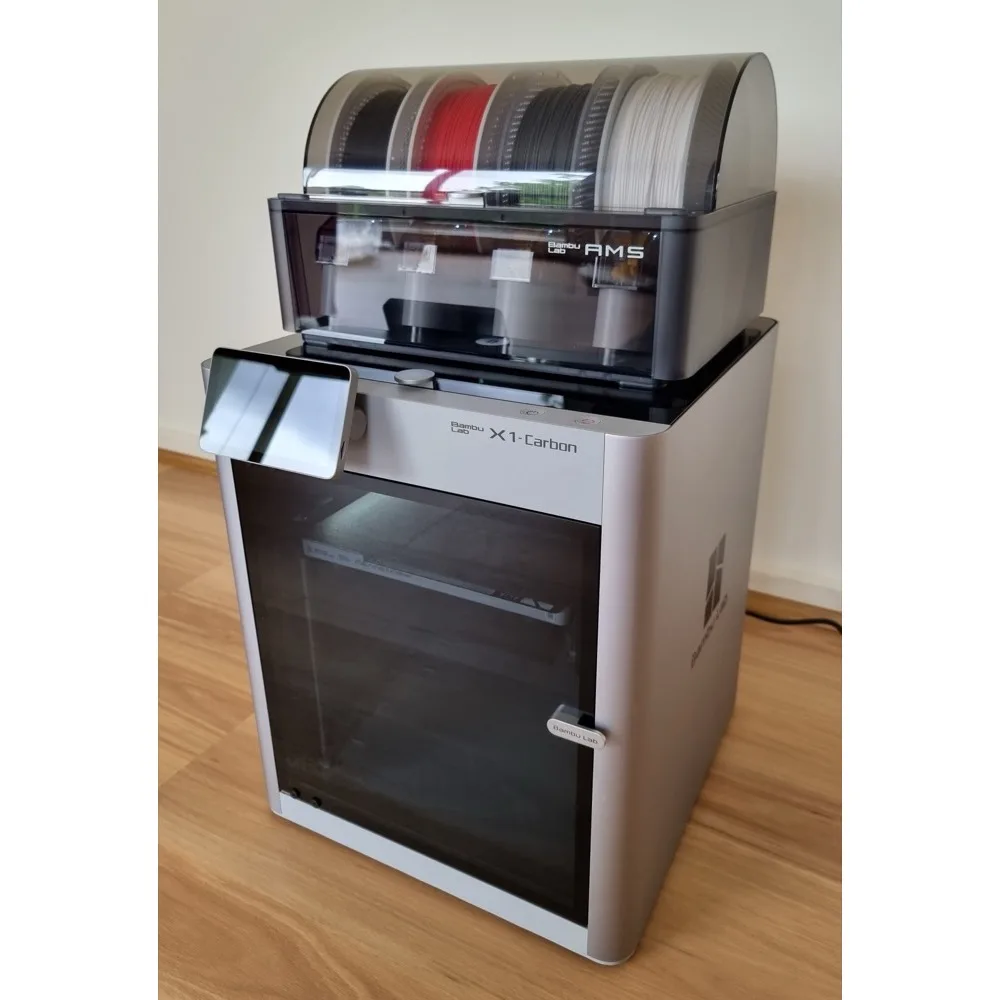
Cómo usar el cortador: parte tu STL en piezas que sí caben
El recorrido completo de nuestra herramienta gratuita: separa, escala a la medida exacta y corta con planos, automático o pincel — todo en tu navegador, sin que el archivo salga de tu computadora.
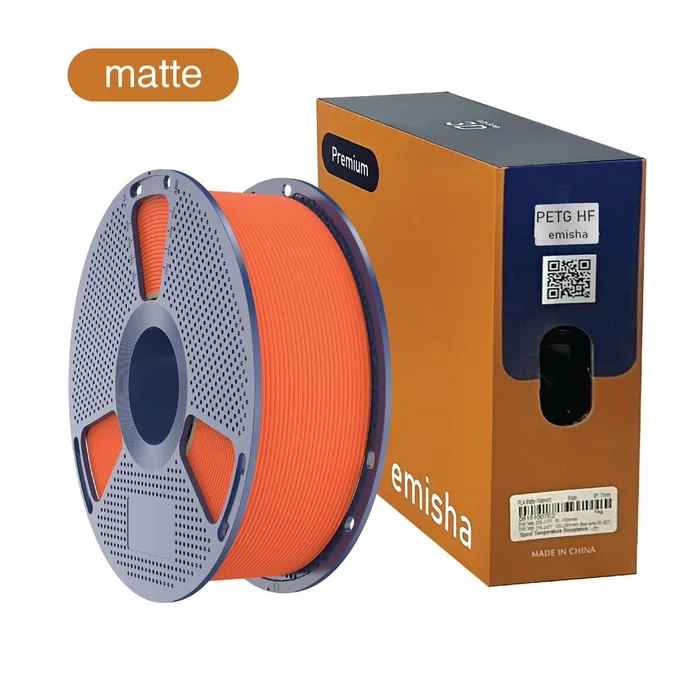
Warping: por qué se levantan las esquinas y cómo evitarlo
La primera capa agarró bien y aun así la esquina amaneció en el aire. No es pegamento: es contracción. Cómo ganarle por los tres frentes —agarre, enfriamiento y diseño— según el material.
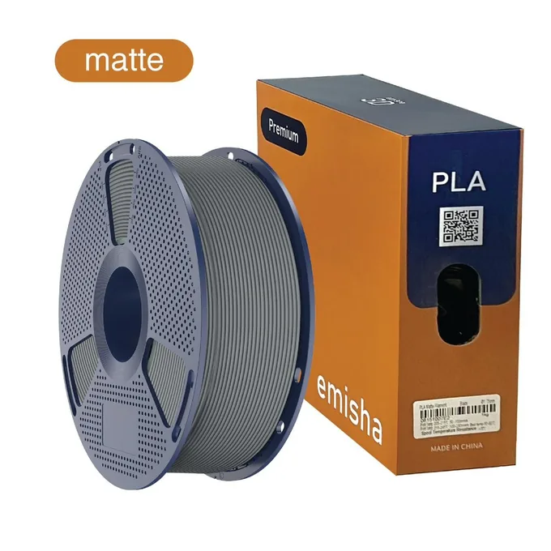
La primera capa no pega: las causas en el orden correcto
La falla más común de todas y la que más perfiles arruina. Las cinco revisiones en el orden en que conviene hacerlas —de la más barata a la más rara— con tabla de síntoma, causa y arreglo.
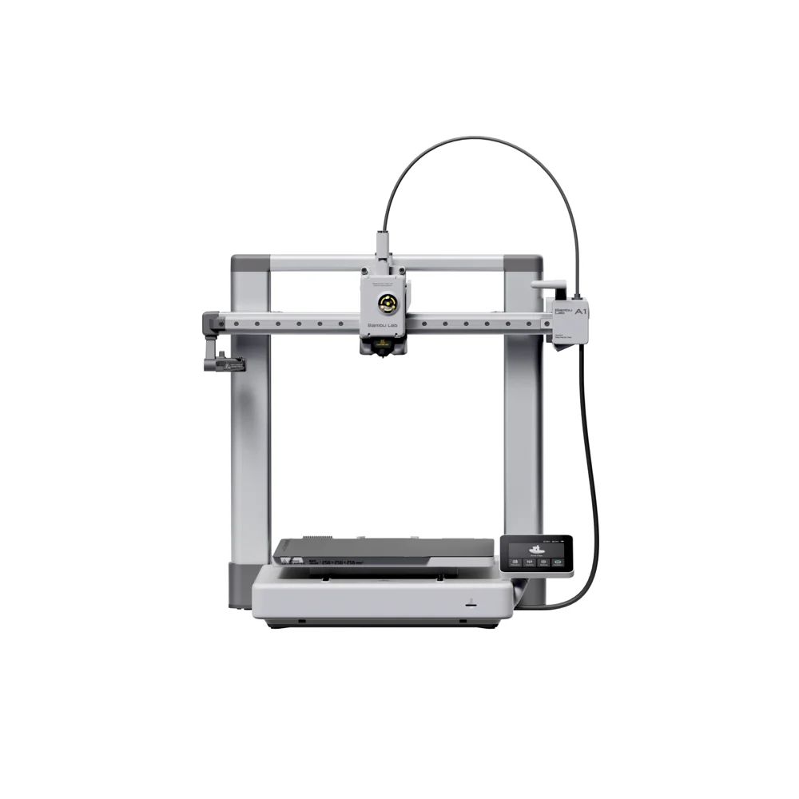
¿Qué Bambu Lab te conviene? A1 mini, A1, P1S, X1C o H2D
Las reparamos todos los días, así que esta guía no sale de la hoja de especificaciones: para quién es cada modelo, abierta o cerrada, y cuál le recomendaríamos a un amigo según lo que quiere imprimir.
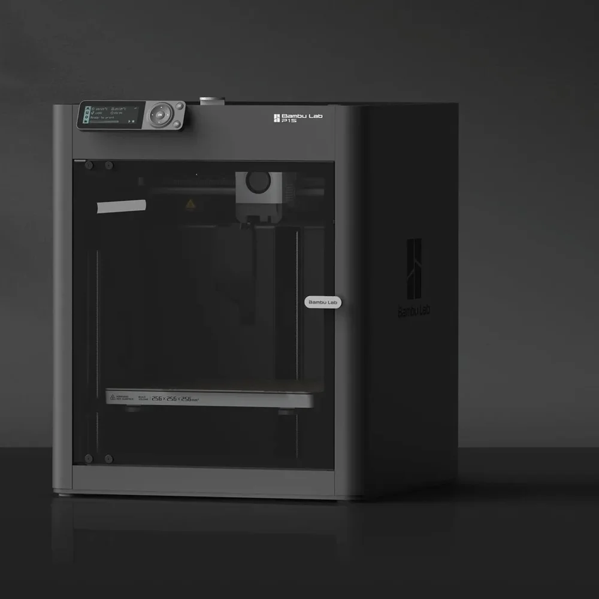
¿Cuánto cuesta mandar a imprimir una pieza en 3D?
Material, horas de máquina y manos: cómo se arma el precio de verdad, por qué el precio por gramo engaña, cómo bajar el costo de tu pieza y cuándo ya te conviene comprar tu propia impresora.
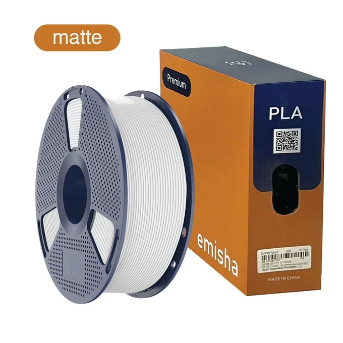
Filamento húmedo: cómo reconocerlo y cómo secarlo bien
Chasquidos en la boquilla, hilos que no se quitan y piezas frágiles: casi siempre es humedad, no la impresora. Cómo confirmarlo en dos minutos, a qué temperatura secar cada material y cómo guardar las bobinas.
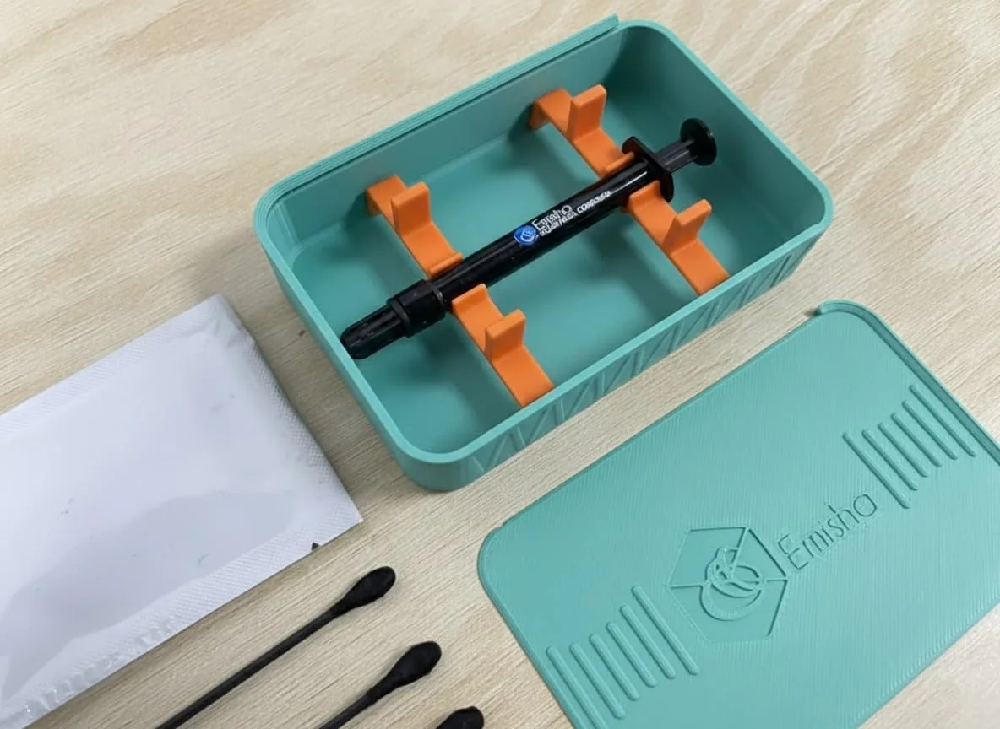
Cómo aplicar metal líquido en una PS5 sin arruinarla
La consola calienta más que antes y el ventilador se oye desde el otro cuarto. El procedimiento completo, cuánto material se ocupa de verdad y por qué el galio nunca puede tocar aluminio.
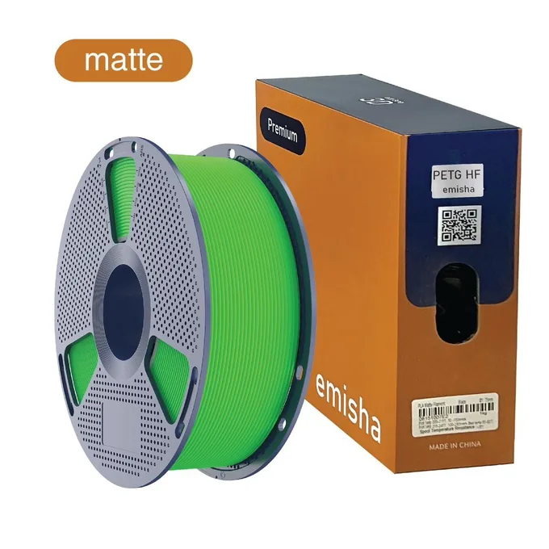
PLA o PETG: cuál conviene para cada pieza
Es la pregunta que más nos hacen. Qué aguanta cada material, dónde falla, tabla comparativa y las temperaturas con las que imprimimos el filamento Emisha.
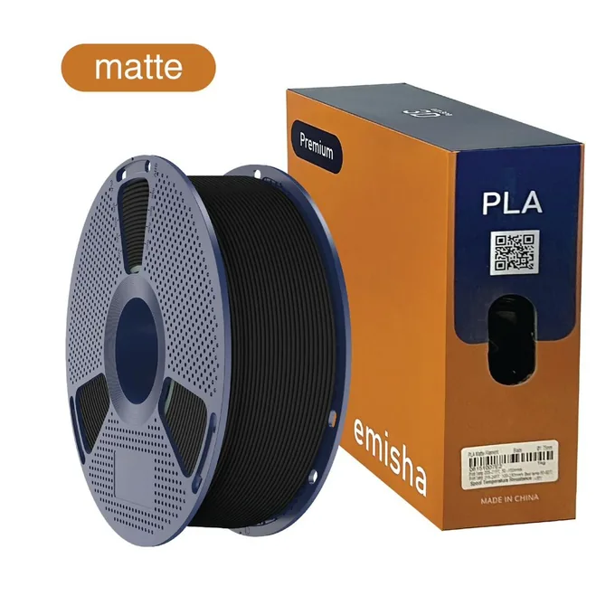
Por qué se atasca el extrusor de tu Bambu Lab y cómo evitarlo
Chasquido en el extrusor, extrusión que se corta sola, filamento molido. Cómo saber cuál de las causas es la tuya sin desarmar de más, y qué revisar cada tanto para que no te vuelva a pasar.
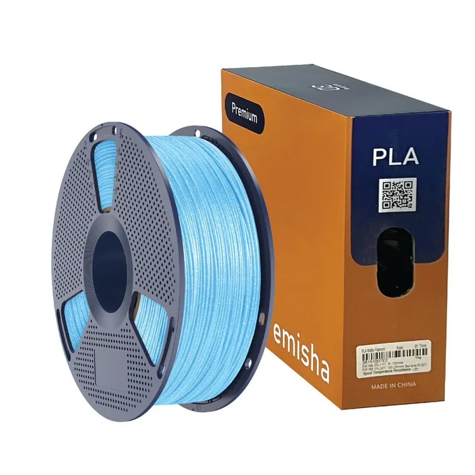
0.2, 0.4, 0.6 u 0.8 mm: qué boquilla usar
Casi todo mundo imprime siempre con la de 0.4 mm. Para qué sirve cada medida, qué altura de capa aguanta y cuándo el cambio de boquilla resuelve lo que ningún ajuste del perfil va a resolver.
¿Te quedó la duda?
Mándanos el modelo de tu impresora y qué le está pasando. Revisarla en el taller no tiene ningún costo y con gusto te atendemos.